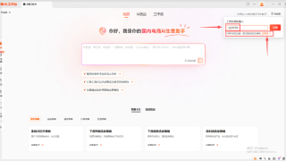

企业荣誉
喜报｜店管家荣获京东2026年度「京卓越服务商」
2026年4月23日，京东服务市场「京卓越」服务商授牌仪式圆满落幕。深圳店管家软件有限公司受邀出席，现场接过「京卓越」官方奖牌，正式荣膺京东2026年度订单管理类目「京卓越」认证服务商，实力跻身京东生态头部服务梯队！
2026年4月23日，京东服务市场「京卓越」服务商授牌仪式圆满落幕。深圳店管家软件有限公司受邀出席，现场接过「京卓越」官方奖牌，正式荣膺京东2026年度订单管理类目「京卓越」认证服务商，实力跻身京东生态头部服务梯队！
尊敬的各位新老商家：骏马踏春至，福韵满人间。值此2026年新春佳节来临之际，衷心感谢大家在过去一年以来对店管家的支持与信任。在此，深圳店管家软件有限公司全体员工提前恭祝大家：新春快乐，身体健康，阖家幸福，事业兴旺!现将2026年春节店管家放假安排和客服值班时间公布如下，敬请知悉!（放假期间有客服值班)

还在为选品发愁？凭感觉挑货总踩坑，眼睁睁看着爆款溜走？手动铺货累到崩溃？一天盯几十个商品，手指点到发麻还赶不上上新节奏？
2025年9月24，店管家受邀参加了【1688 分销渠道大会】，并获得《2025年度1688分销优秀多渠道打单工具》荣誉称号。此份荣誉不仅是 1688 平台对我们技术实力的高度认可，更是万千商家伙伴用信任浇筑的勋章。
2025京东服务商生态伙伴大会将于4月29日正式开启！ 店管家依托出色的服务水准与雄厚的技术实力，首次被授予<2025年订单工具“潜力”合作伙伴>奖项。这份荣誉不仅是对我们团队过去努力的认可，更是对未来深化合作、共同成长的期许。
2020年是一个电商直播年，各大电商平台都在大力扶持直播卖货，而对于电商直播打单辅助软件却没有多少人清楚。针对于直播卖货快递单打印软件哪个好用呢？根据可靠数据得知大部分电商卖家都在使用店管家打单发货软件，支持电脑端和手机小程序使用，操作简单易用性强，下面就来重点分享电商直播打单辅助软件店管家的具体操作教程。
暂无相关文章